The Scan-To-Connect (STC) Utility is a Zebra Android app that lets you pair a Zebra cordless scanner to your phone or tablet by simply scanning an on-screen barcode, and then delivers scanned data straight into your apps as keyboard input. No manual Bluetooth pairing menus, no cables.
This guide walks you through the whole journey: installing the app, granting the required permissions, enabling the STC keyboard, pairing a scanner, and using the app day to day. It also covers every setting, a fast checklist for managed and production rollouts, troubleshooting, and the list of supported scanners.
The STC Utility lets you connect and pair a Zebra cordless scanner to an Android device:
Make sure you have the following ready:
You will be asked to grant a few permissions during setup (folder access, nearby devices/Bluetooth) and to enable the STC on-screen keyboard. These permission settings are explained in detail under Setup & Configuration.
A high-level understanding of the app's functionality makes the setup process straightforward and easy to follow.
For the compatible devices list, please visit the following page.
Cordless Scan-To-Connect for Android – Support and Downloads
During the setup process, select a mode to determine how scanner data is delivered to the host device.
Table 1: Communication Protocols
| Protocol | What it is | Best for |
|---|---|---|
| HID Keyboard | Standard Bluetooth. The scanner behaves like a plug-in keyboard. Simple and universally compatible, but with no delivery guarantees or advanced character support. | Basic setups where simplicity matters most. |
| Enhanced HID Keyboard | Zebra's optimized mode over Bluetooth Classic. Adds Data Delivery Protection (lost or corrupted scans are re-sent) and supports international/Unicode characters. | Reliable, high-volume scanning. |
| Enhanced HID Keyboard over BLE | The same enhanced reliability and character support, but over Bluetooth Low Energy – far gentler on battery for both scanner and device. Unlike the other two protocols, you are not prompted to enter the device's Bluetooth MAC address. | Most users. This is the recommended default. |
After installing the STC Utility app from the Play Store, tap the app icon to launch it. The STC splash screen appears while the app loads.
On initial setup, the app opens the file picker at an STC_Suite folder. Tap the Use this folder button at the bottom of the screen to grant access to this location.
A system confirmation dialog then appears. Tap Allow to grant access to the STC_Suite folder.
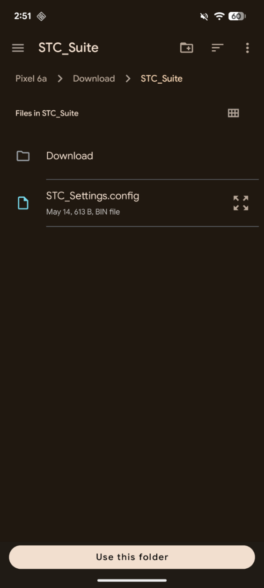
Figure 1: Selecting the STC_Suite Settings Folder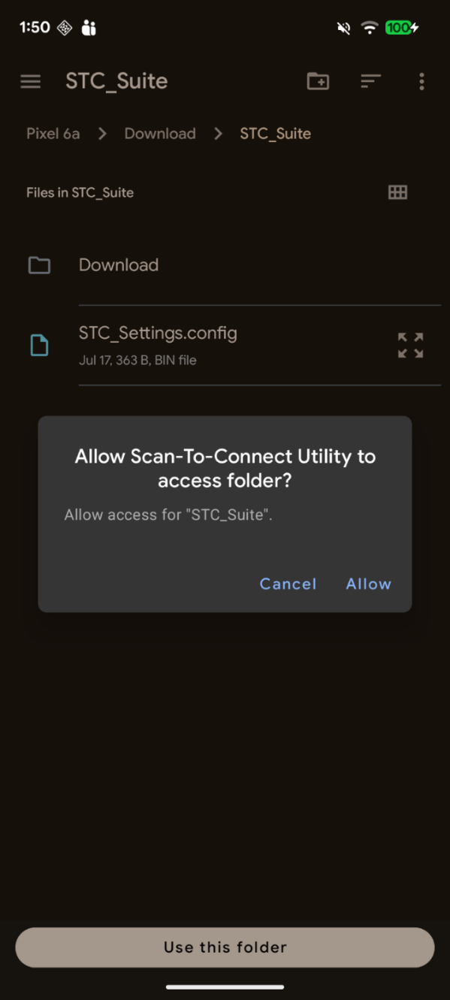
Figure 2: Granting Permission to the FolderThe app requests permission to find, connect to, and determine the relative position of nearby devices – required for BLE scanning. Tap Allow to continue. This is essential: without it the app cannot discover or pair your scanner.
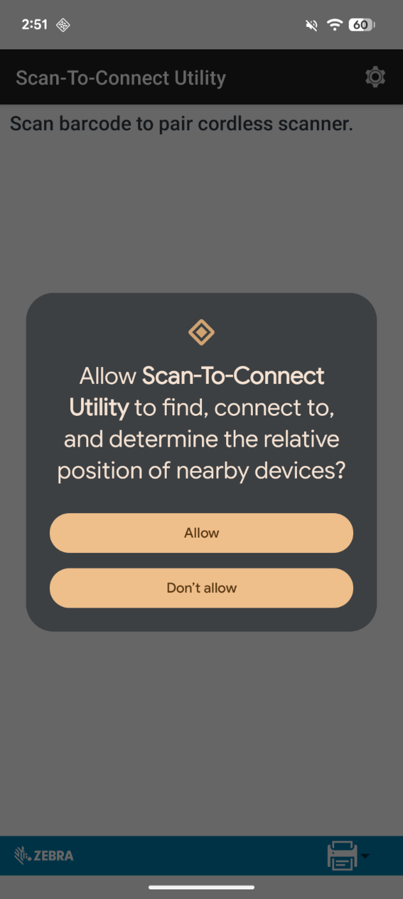
Figure 3: Allowing Nearby Devices (Bluetooth) PermissionThe Select Communication Protocol dialog lets you choose how the scanner talks to your device – see Communication Protocols. The recommended protocol, Enhanced HID Keyboard Over BLE, is selected by default. Tap Continue to move forward.
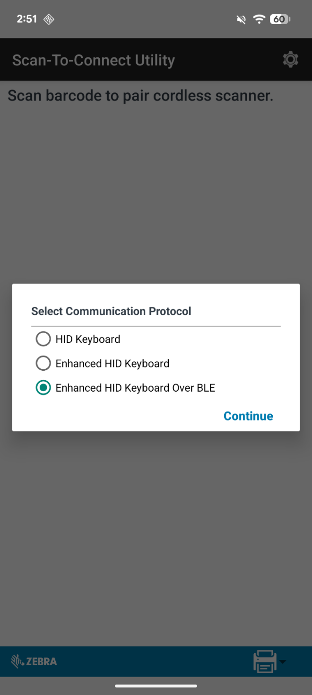
Figure 4: Selecting the Communication ProtocolThe Setup Wizard prompts you to enable the Zebra Scan-To-Connect keyboard in Android's Language & Input settings. Tap GO TO LANGUAGE & INPUT.
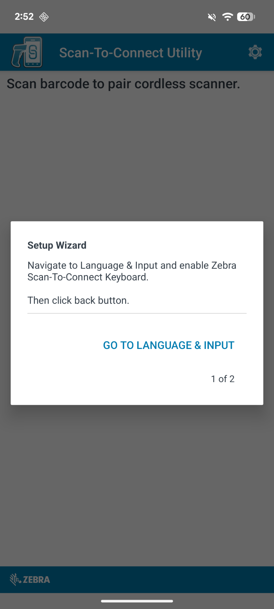
Figure 5: Setup Wizard (1 of 2) – Language & InputOn the On-screen keyboard settings page, find Zebra Scan-To-Connect and toggle it ON to enable the input method.
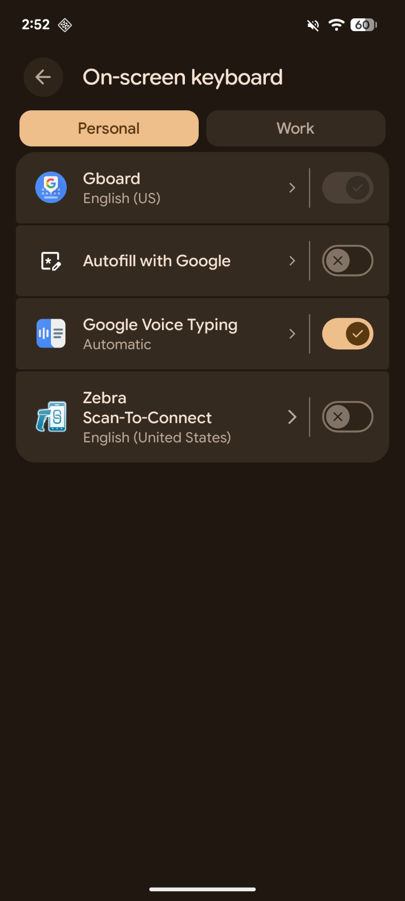
Figure 6: Enabling the Zebra Scan-To-Connect KeyboardAndroid shows an Attention warning that the input method can collect the text you type. Tap OK to confirm and enable the keyboard.
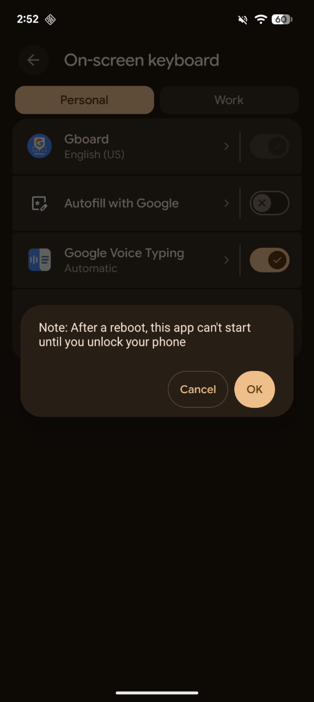
Figure 7: Confirming the Input Method Attention PromptA follow-up note may appear: "After a reboot, this app can't start until you unlock your phone." Tap OK to acknowledge and continue.
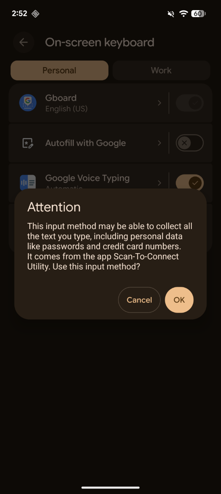
Figure 8: Acknowledging the Reboot NoticeBack in the STC Utility app, the Setup Wizard now prompts you to set Zebra Scan-To-Connect as the default keyboard. Tap GO TO CHANGE KEYBOARD.
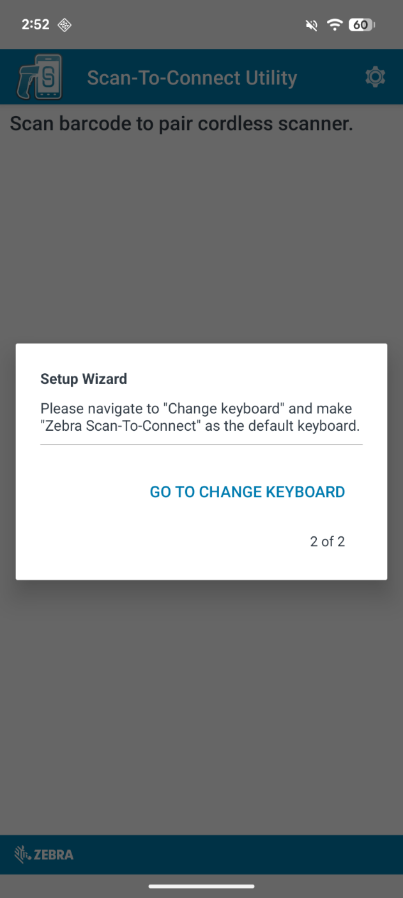
Figure 9: Setup Wizard (2 of 2) – Change KeyboardIn the keyboard selection popup, choose Zebra Scan-To-Connect – English (United States) instead of Gboard. This makes the Zebra Scan-To-Connect keyboard the active input method.
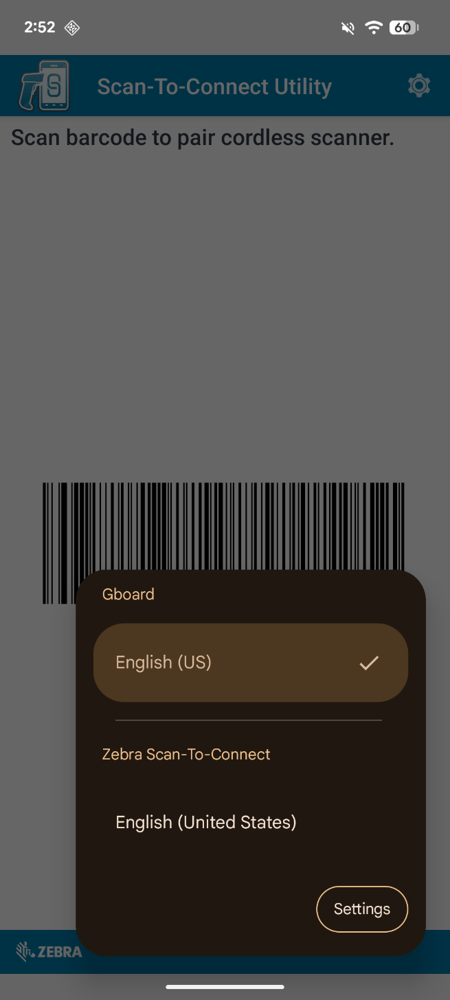
Figure 10: Selecting Zebra Scan-To-Connect as the Active KeyboardThe app returns to the main screen and displays a pairing barcode under Scan barcode to pair cordless scanner. Using your Zebra cordless scanner, scan the barcode on the screen to complete the Bluetooth (BLE) pairing. Once scanned, the scanner connects to the device and setup is complete.
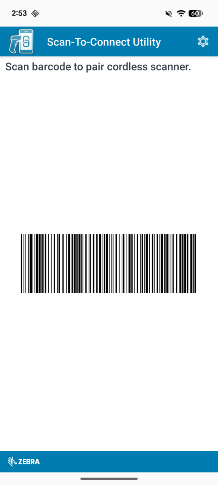
Figure 11: Scanning the Pairing BarcodeOpen Settings from the main screen to configure app behavior.
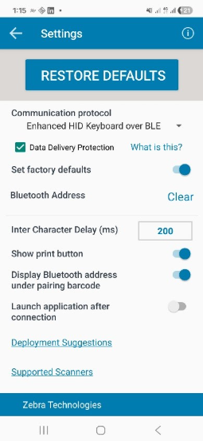
Figure 12: Settings ViewTable 2: Settings Reference
| Setting | What it does | Options / values |
|---|---|---|
| Restore defaults | Resets all app behavior to baseline values. | Action |
| Communication protocol | Switches among HID and enhanced modes. Change only if you understand your deployment requirement. | HID / Enhanced HID / Enhanced HID over BLE |
| Data delivery protection | Adds reliability safeguards for enhanced protocol modes. Tap "What is this?" in-app for details. | Enhanced modes only |
| Set factory defaults | Controls whether the scanner's factory defaults are applied during pairing. | On / Off |
| Bluetooth address | Shows the saved manual address (if any); tap "Clear" to remove it. | Format AA:BB:CC:DD:EE:FF |
| Inter-character delay (ms) | Delay between injected keystrokes. Increase if characters drop or arrive out of order. | 0–3000 ms (default 200) |
| Show print button | Shows or hides the print controls on the main screen. | On / Off |
| Display Bluetooth address under pairing barcode | Shows or hides the address text beneath the barcode. | On / Off |
| Launch application after connection | Auto-launches a selected app after a successful connection. Use "Select application" to choose the target. | On / Off + app picker |
| Deployment suggestions | Opens deployment instructions for admin rollout. | Action |
| Supported scanners | Opens the in-app supported scanner list. | Action |
Use this checklist for managed and production environments where a consistent configuration is pushed to many devices.
Internal Storage > Download > STC_Suite > Download > STC_Settings.config
The destination device's STC Utility application will now be configured the same as the source device's.
For some protocol and device combinations, the app may ask for your phone or tablet's Bluetooth address:
After your scanner is paired using the steps above, every barcode you scan is delivered to your Android device as keyboard input through the bundled Zebra Scan-To-Connect input method. The decoded barcode text is typed into whichever text field currently has focus – exactly as if you had typed it yourself. You do not need to keep the STC Utility app in the foreground; scanning works system-wide, in any app that accepts text.
IMPORTANT
Zebra recommends using the latest release whenever possible.
To download the STC Utility for Android: